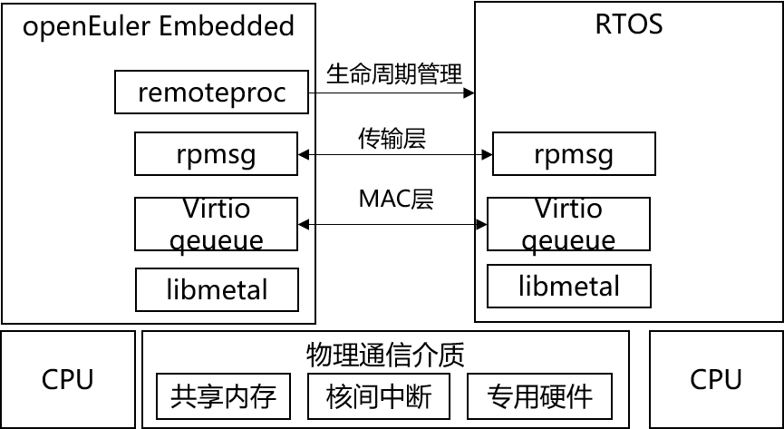

多OS混合部署框架¶
背景：混合关键性系统¶
在嵌入式场景中，虽然Linux已经得到了广泛应用，但并不能覆盖所有需求，例如高实时、高可靠、高安全的场合。这些场合往往是实时操作系统 的用武之地。有些应用场景既需要Linux的管理能力、丰富的生态又需要实时操作系统的高实时、高可靠、高安全，那么一种典型的设计是采用一颗性能较 强的处理器运行Linux负责富功能，一颗微控制器/DSP/实时处理器运行实时操作系统负责实时控制或者信号处理，两者之间通过I/O、网络或片外 总线的形式通信。这种方式存在的问题是，硬件上需要两套系统、集成度不高，通信受限与片外物理机制的限制如速度、时延等、软件上Linux和实时 操作系统两者之间是割裂的，在灵活性上、可维护性上存在改进空间。
受益于硬件技术的快速发展，嵌入式系统的硬件能力越来越强大，如单核能力不断提升、单核到多核、异构多核乃至众核的演进，虚拟化技术和可信执行环境(TEE) 技术的发展和应用，未来先进封装技术会带来更高的集成度等等，使得在一个片上系统中（SoC)部署多个OS具备了坚实的物理基础。
同时，受应用需求的推动，如物联网化、智能化、功能安全与信息安全等等，整个嵌入式软件系统也越发复杂，全部由单一OS承载所有功能所面临的挑战越来越大。 解决方式之一就是不同系统负责所各自所擅长的功能，如Windows的UI、Linux的网络通信与管理、实时操作系统的高实时与高可靠等，而且还要易于开发、部署、 扩展，实现的形式可以是容器、虚拟化等。
面对上述硬件和应用的变化，结合自身原有的特点，嵌入式系统未来演进的方向之一就是 混合关键性系统(MCS, Mixed Criticality System), 这可以从典型的 嵌入式系统-汽车电子的最近发展趋势略见一斑。

图 1 openEuler Embedded中的混合关键性系统大致架构¶
从openEuler Embedded的角度，混合关键性系统的大致架构如上图所示，所面向的硬件是具有同构或异构多核的片上系统，从应用的角度看会同时部署多个OS/运行时，例如 Linux负责系统管理与服务、1个实时操作系统负责实时控制、1个实时操作系统负责系统可靠、1个裸金属运行时运行专用算法，全系统的功能是由各个OS/运行时协同完成。中间的 混合部署框架 和 嵌入式虚拟化 是具体的支撑技术。关键性（Criticality)狭义上主要是指功能安全等级，参考泛功能安全标准IEC-61508，Linux可以达到SIL1或SIL2级别， 实时操作系统可以达到最高等级SIL3; 广义上，关键性可以扩展至实时等级、功耗等级、信息安全等级等目标。
在这样的系统中，需要解决如下几个问题：
高效地混合部署问题：如何高效地实现多OS协同开发、集成构建、独立部署、独立升级
高效地通信与协作问题: 系统的整体功能由各个域协同完成，因此如何高效地实现不同域之间高效、可扩展、实时、安全的通信
高效地隔离与保护问题: 如何高效地实现多个域之间的强隔离与保护，使得出故障时彼此不互相影响，以及较小的可信基（Trust Compute Base)
高效地资源共享与调度问题: 如何在满足不同目标约束下（实时、功能安全、性能、功耗），高效地管理调度资源，从而提升硬件资源利用率
对于上述问题，openEuler Embedded的当前思路是 混合关键性系统 = 部署 + 隔离 + 调度 , 即首先实现多OS的混合部署，再实现多OS之间的隔离与保护，最后通过 混合关键性调度提升资源利用率， 具体可以映射到 混合部署框架 和 嵌入式虚拟化。 混合部署框架解决 高效地混合部署问题 和 高效地通信与协作问题， 嵌入式虚拟化解决 高效地隔离与保护问题 和 高效地资源共享与调度问题。
多OS混合部署框架¶
openEuler Embedded中多OS混合部署框架的架构图如下所示，引入了开源框架 OpenAMP 作为基础， 并结合自身需要 进一步创新。
 图 2 多OS混合部署框架的基础架构¶
在上述架构中，libmetal提供屏蔽了不同系统实现的细节提供了统一的抽象，virtio queue相当于网络协议中的MAC层提供高效的底层通信机制，rpmsg相当于网络协议中的 传输层提供了基于端点(endpoint)与通道(channel)抽象的通信机制, remoteproc提供生命周期管理功能包括初始化、启动、暂停、结束等。
在openEuler Embedded 22.03中，集成了OpenAMP相关支持并与openEuler的 SIG Zephyr 合作 实现了openEuler Embedded与实时操作系统 Zephyr 在QEMU平台上的混合部署，具体可以参考
在openEuler Embedded 22.09中，新增串口服务demo，实现通过Linux shell命令行访问Client OS的功能，样例支持多用户多线程场景。 在openEuler Embedded 22.09中，混合部署demo支持运行在树莓派4B上。

图 3 串口服务demo¶
在此基础上，openEuler Embedded的混合部署框架还会继续演进，包括对接更多的实时操作系统，如国产开源实时操作系统 RT-Thread，实现如下图所示的 多OS服务化部署并适时引入基于虚拟化技术的嵌入式弹性底座。

图 4 多OS服务化部署架构¶
在上述多OS服务化部署架构中，openEuler Embedded是中心，主要对其他OS提供管理、网络、文件系统等通用服务，其他OS可以专注于其所擅长的领域提诸如实时控制、监控等服务，并通过shell、log和debug 等通道与Linux丰富而强大维测体对接从而简化开发工作。